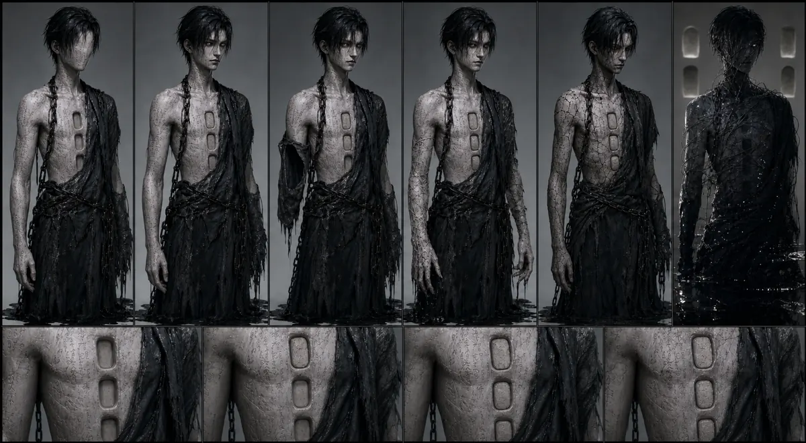
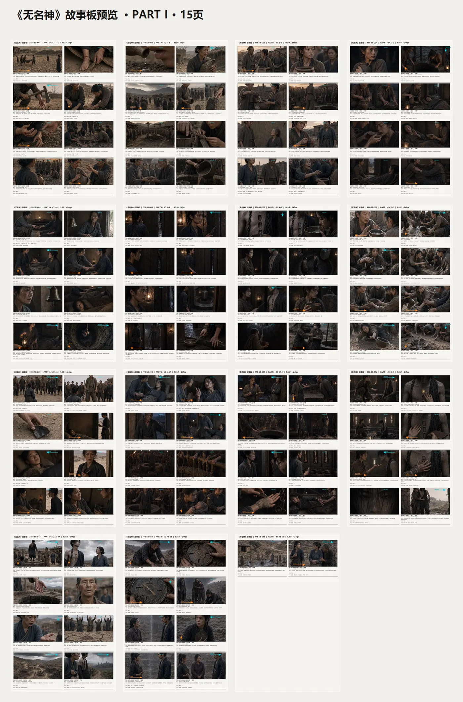
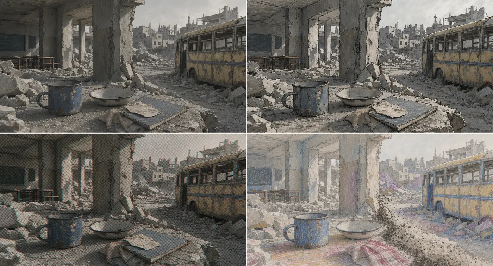
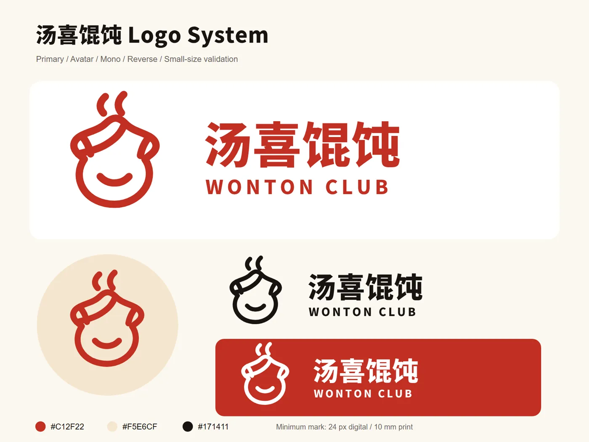

01 / 发现
先找到真正的约束。
梳理人员、数据、工具和决策，识别 AI 能否产生业务价值的关键条件。

前沿部署式工程伦敦 / 全球交付
Anna AI Studios 与创意和技术团队并肩工作，把 AI 从演示原型推进到可持续运行的生产系统。
进入系统00.0 / 08.0
01 — 前沿部署
我们进入真实运行环境，直到系统可用、被采用，并能够被衡量。
这意味着与实际执行工作的人一起梳理流程，接入他们已经依赖的工具，并承担从精彩原型到可靠生产系统之间最困难的那段距离。
02 — 核心能力
既交付复杂生产场景中的核心 AI 工程，也提供可独立部署的客户增长系统。
把图像、视频、音频和语言模型组装为可控制、可重复的生产工作流。
让智能体基于正确上下文、连接真实工具，并受到明确人工决策的约束。
通过生产 API、数据管线和界面，把智能放到工作真正发生的位置。
从第一天开始构建任务级评估、失败可见性、来源追踪和审批节点。
客户增长系统
根据真实运行环境配置，不作为开箱即用的软件产品销售。可独立部署，也可连接成可度量的获客、预约与跟进流程。
03 — 交付方式
由资深实践者直接负责交付。从第一张流程图到生产系统，持续承担清晰的技术责任。
发现
观察真实工作，识别高摩擦决策，定义边界清晰的生产结果。
构建
交付最小可行的完整系统，同时验证数据、模型与界面行为。
部署
在现有环境中接入身份、权限、可观测性和人工审核。
扩展
利用真实运行证据改进系统，并延伸到下一个高价值工作流。
捕捉00.0 / 08.0
系统间奏 / 信号路径
像唱针读取沟槽一样，我们沿真实生产信号深入，把原始输入与模型状态一路连接到控制闸门和真正使用结果的人。
从实时输入、例外和约束开始，而不是从理想化流程图开始。
让上下文、模型状态与工具沿同一条可检查路径前进。
在失败代价真实存在的节点加入评估、来源记录与人工审批。
让结果可追溯、可审查，并在演示之外持续产生作用。
04 — Anna Lab
以下为 Anna Lab 的影视制作与品牌交付案例。展示真实进行中的工作，不虚构客户成果。


Anna Lab / AI 影视工作流 01
Codex + Seedance 2.5 · 长片开发
一部原创 110 分钟东方神话奇幻动画长片。它不是松散的提示词链，而是一套可审计的制作控制系统：Codex 负责锁稿、拆解、连续性、艺术指导、465 镜计划、185 帧故事板包和独立审核门禁；Seedance 2.5 视频提示词继承同一套已批准资产关系。

Anna Lab / AI 影视工作流 02
Codex + Seedance 2.5 · 动画短片开发
一套从锁定剧本推进到视觉母版、确定性状态变体、故事板和 Seedance 镜头包的动画短片工作流。发现递归生成造成纹理漂移后，管线加入 SHA 血缘追踪、仅批准资产绑定、失败隔离与回源重试，并由独立导演审核控制升级。

Anna Lab / 品牌交付 03
AI 辅助品牌识别 + 宣传物料生产
从真实产品参考出发，建立双语品牌识别、Logo 变体、菜单信息层级、宣传海报与可进入动效制作的资产。可编辑品牌 Token 与生成式视觉层分离；包装信息和产品声明必须经过人工生产门禁。
05 — 工作室 / 核心成员
Anna AI Studios 坚持由资深实践者直接参与交付。核心成员 Ke Wang 现任 DNEG Senior FX Artist，同时也是 Visual AI Specialist，长期专注电影级模拟、制作管线与 AI 辅助影像。
电影级制作让失败无处隐藏：规模、连续性、交接与截止日期都必须经受真实生产检验。这段经验定义了工作室的交付标准——面向真实环境构建，保留人的判断，并确保系统可运行、可观测、可维护。
Ke Wang 的 LinkedIn06 — 从这里开始
请描述真实运行环境、当前约束和目标结果。我们会找到最小但有价值的系统，并直接告诉你什么值得构建、什么不值得。